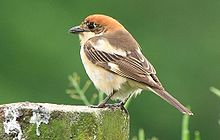
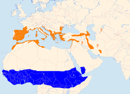
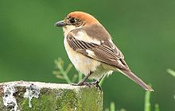
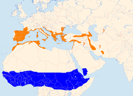

| Woodchat Shrike | |
|---|---|
|  | |
| Conservation status | |
| Binomial name | |
| Lanius senator Linnaeus, 1758 |
|
|  | |
Summer Winter[1] |
| Woodchat Shrike | |
|---|---|
|  | |
| Conservation status | |
| Binomial name | |
| Lanius senator Linnaeus, 1758 |
|
|  | |
Summer Winter[1] |
The Woodchat Shrike (Lanius senator) is a member of the shrike family Laniidae.
The Woodchat breeds in southern Europe, the Middle East and northwest Africa, and winters in tropical Africa. It breeds in open cultivated country, preferably with orchard trees and some bare or sandy ground.
This migratory medium-sized passerine eats large insects, small birds and frogs. Like other shrikes it hunts from prominent perches, and impales corpses on thorns or barbed wire as a "larder".
The male is a striking bird with black and white plumage and a chestnut crown. The race L. s. badius of the western Mediterranean lacks the large white wing patches.
In the female and young birds the upperparts are brown and vermiculated. Underparts are buff and also vermiculated.
This species often overshoots its breeding range on spring migration, and is a rare, but annual, visitor to Great Britain. The Balearic race badius has occurred in Britain around four times as a vagrant, and has also been recorded once in Ireland.

{kind=link}
{kind=link}